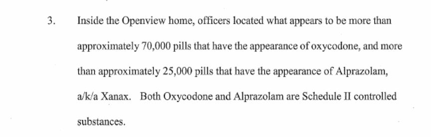
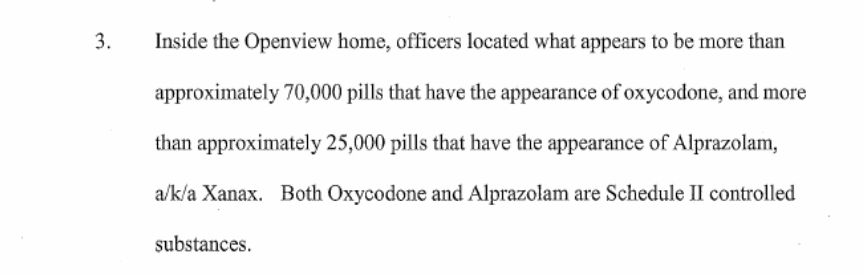

Pharma-Master Charged in New Fatal Overdose Case
~5 min read | Published on 2018-10-19, tagged Arrested, Darkweb-Vendor, General-News using 1050 words.
According to the United States Attorney’s Office for the District of Utah, Aaron Michael Shamo aka the Alphabay vendor known as “Pharma-Master” sold fentanyl to an individual who fatally overdosed in 2016. Shamo’s fentanyl-laced “oxycodone” pills caused the overdose, prosecutors claimed.Distribution Of Fentanyl Resulting In Death Charge Added to Pharma-Master Indictment
A federal grand jury in Salt Lake City returned a second superseding indictment Thursday morning in the Aaron Michael Shamo case. The 13-count indictment alleges a count of aiding and abetting the distribution of a controlled substance (fentanyl) resulting in death.
The indictment alleges that Shamo intentionally and knowingly distributed a substance containing Fentanyl, the use of which resulted in the June 13, 2016, death of a person identified as R.K. in the indictment.
The superseding indictment charges one count of Continuing Criminal Enterprise; three counts of aiding and abetting the importation of a controlled substance; one count of possession of a controlled substance with intent to distribute, one count of manufacture of a controlled substance and two counts of knowing and intentional adulteration of drugs while held for sale. It also includes one count of aiding and abetting the use of the U.S. mail in furtherance of a drug trafficking offense, one count of conspiracy to commit money laundering, one count of money laundering promotion and concealment, and one count of engaging in monetary transactions in property derived from specified unlawful activities – in addition to the distribution resulting in death count.
The indictment alleges Shamo directed an international drug trafficking organization that imported Fentanyl and Alprazolam from China and manufactured controlled substances, namely fake oxycodone pills made with Fentanyl and counterfeit Xanax tablets. Documents filed by federal prosecutors as a part of the case allege Shamo and his co-conspirators purchased pill tableting machines – sometimes called pill presses – to mark pills so the markings would match those of legitimate pharmaceutical drugs. The organization distributed these controlled substances to other individuals for distribution throughout the United States and elsewhere using their storefront, PHARMA-MASTER, on the Dark Net marketplace AlphaBay and through the U.S. mail, according to the indictment and case documents. According to a complaint filed in the case, when law enforcement officers executed a search warrant at Shamo’s house in November 2016, they found approximately 70,000 pills that had the appearance of Oxycodone and more than 25,000 pills that appeared to be Alprazolam. The drug trafficking organization distributed more than 800,000 pills.

Counts 8 and 9 of the indictment allege Shamo manufactured round blue tablets with markings on them to look like Oxycodone tablets. He offered the tablets for sale on the internet as Oxycodone 30 mg tablets. Despite these representations, the defendant did not use Oxycodone in the manufacturing process. He substituted Fentanyl, a much more potent synthetic opioid, the indictment alleges.
The organization began as a collaboration between Shamo and Drew Wilson Crandall, but grew to include others.
Crandall, age 32, most recently of Brisbane, Australia, pleaded guilty in federal court Wednesday to conspiracy to distribute Fentanyl, conspiracy to distribute Alprazolam, and conspiracy to commit money laundering. As a part of a statement in advance of the plea agreement filed in court, Crandall admitted that he and his co-defendant, Shamo, imported and distributed controlled substances in Utah and elsewhere. He admitted they sold controlled substances on dark web marketplaces. As he made plans to leave the country, he trained co-conspirators to assume the roles he had held in the organization. He admitted he stayed in contact with Shamo after leaving Utah and began to provide online customer support for Shamo’s vendor account on AlphaBay. This work continued until Shamo’s arrest in November 2016.
Crandall admitted that the co-conspirators each had a role to play and they relied on each other to meet their common objective: to earn money by selling drugs.
According to the plea agreement, Shamo normally paid Crandall by bitcoin while he was out of the country. However, at his request in November 2016, Shamo deposited drug proceeds – specifically U.S. currency – into Crandall’s bank account as payment for his ongoing services to PHARMA-MASTER.
Federal prosecutors have agreed to recommend Crandall be sentenced at the low end of the sentencing guideline range determined by the Court. He faces up to life in prison with a mandatory minimum of 10 years in prison for the conspiracy to distribute fentanyl conviction, up to five years for the for conspiracy to distribute alprazolam, and a maximum of 20 years for conspiracy to commit money laundering.
Other defendants charged in earlier indictments have also reached plea agreements in the case. They include Alexandrya Marie Tonge, age 26, and Katherine Lauren Anne Bustin, age 28, both of South Jordan, Utah; and Mario Anthony Noble, age 29, and Sean Michael Gygi, age 28, both of Midvale, Utah. Sentencings for these defendants will be scheduled at a later date.
Shamo faces a mandatory life sentence if convicted of the Continuing Criminal Enterprise count in the indictment. Several other counts, including aiding and abetting the importation of fentanyl, possession of fentanyl with intent to distribute and aiding and abetting the distribution of a controlled substance resulting in death carry potential life sentences. Other counts carry potential sentences of five years to 40 years.
The indictment includes a notice that federal prosecutors intend to seek criminal forfeiture of property and proceeds derived from the alleged conduct or used to commit or facilitate the commission of the offenses. Included in the notice is millions of dollars in U.S. currency, an industrial large pill press and associated dyes, four 100-ounce silver bars, and cash as a substitute for two vehicles sold as a part of the case – among other things.
Indictments are not findings of guilt. An individual charged in an indictment is presumed innocent unless or until proven guilty in court.
A three-week trial is set to start on Jan. 22, 2019, before U.S. District Judge Dale A. Kimball.
Special Assistant U.S. Attorneys from the Utah Attorney General’s Office are joining an Assistant United States Attorney in the U.S. Attorney’s Office in Salt Lake City in prosecuting the case. U.S. Postal Inspectors and special agents of U.S. Immigrations and Customs Enforcement Homeland Security Investigations, the FDA, DEA Metro Narcotics Task Force in Salt Lake City, and IRS-Criminal Investigation are investigating the case.
DoJ Announcement: U.S. Attorney’s Office for the District of Utah
A federal grand jury in Salt Lake City returned a second superseding indictment Thursday morning in the Aaron Michael Shamo case. The 13-count indictment alleges a count of aiding and abetting the distribution of a controlled substance (fentanyl) resulting in death.
The indictment alleges that Shamo intentionally and knowingly distributed a substance containing Fentanyl, the use of which resulted in the June 13, 2016, death of a person identified as R.K. in the indictment.
The superseding indictment charges one count of Continuing Criminal Enterprise; three counts of aiding and abetting the importation of a controlled substance; one count of possession of a controlled substance with intent to distribute, one count of manufacture of a controlled substance and two counts of knowing and intentional adulteration of drugs while held for sale. It also includes one count of aiding and abetting the use of the U.S. mail in furtherance of a drug trafficking offense, one count of conspiracy to commit money laundering, one count of money laundering promotion and concealment, and one count of engaging in monetary transactions in property derived from specified unlawful activities – in addition to the distribution resulting in death count.
The indictment alleges Shamo directed an international drug trafficking organization that imported Fentanyl and Alprazolam from China and manufactured controlled substances, namely fake oxycodone pills made with Fentanyl and counterfeit Xanax tablets. Documents filed by federal prosecutors as a part of the case allege Shamo and his co-conspirators purchased pill tableting machines – sometimes called pill presses – to mark pills so the markings would match those of legitimate pharmaceutical drugs. The organization distributed these controlled substances to other individuals for distribution throughout the United States and elsewhere using their storefront, PHARMA-MASTER, on the Dark Net marketplace AlphaBay and through the U.S. mail, according to the indictment and case documents. According to a complaint filed in the case, when law enforcement officers executed a search warrant at Shamo’s house in November 2016, they found approximately 70,000 pills that had the appearance of Oxycodone and more than 25,000 pills that appeared to be Alprazolam. The drug trafficking organization distributed more than 800,000 pills.

Pills Found in Pharma-Master Case
Counts 8 and 9 of the indictment allege Shamo manufactured round blue tablets with markings on them to look like Oxycodone tablets. He offered the tablets for sale on the internet as Oxycodone 30 mg tablets. Despite these representations, the defendant did not use Oxycodone in the manufacturing process. He substituted Fentanyl, a much more potent synthetic opioid, the indictment alleges.
The organization began as a collaboration between Shamo and Drew Wilson Crandall, but grew to include others.
Crandall, age 32, most recently of Brisbane, Australia, pleaded guilty in federal court Wednesday to conspiracy to distribute Fentanyl, conspiracy to distribute Alprazolam, and conspiracy to commit money laundering. As a part of a statement in advance of the plea agreement filed in court, Crandall admitted that he and his co-defendant, Shamo, imported and distributed controlled substances in Utah and elsewhere. He admitted they sold controlled substances on dark web marketplaces. As he made plans to leave the country, he trained co-conspirators to assume the roles he had held in the organization. He admitted he stayed in contact with Shamo after leaving Utah and began to provide online customer support for Shamo’s vendor account on AlphaBay. This work continued until Shamo’s arrest in November 2016.
Crandall admitted that the co-conspirators each had a role to play and they relied on each other to meet their common objective: to earn money by selling drugs.
According to the plea agreement, Shamo normally paid Crandall by bitcoin while he was out of the country. However, at his request in November 2016, Shamo deposited drug proceeds – specifically U.S. currency – into Crandall’s bank account as payment for his ongoing services to PHARMA-MASTER.
Federal prosecutors have agreed to recommend Crandall be sentenced at the low end of the sentencing guideline range determined by the Court. He faces up to life in prison with a mandatory minimum of 10 years in prison for the conspiracy to distribute fentanyl conviction, up to five years for the for conspiracy to distribute alprazolam, and a maximum of 20 years for conspiracy to commit money laundering.
Other defendants charged in earlier indictments have also reached plea agreements in the case. They include Alexandrya Marie Tonge, age 26, and Katherine Lauren Anne Bustin, age 28, both of South Jordan, Utah; and Mario Anthony Noble, age 29, and Sean Michael Gygi, age 28, both of Midvale, Utah. Sentencings for these defendants will be scheduled at a later date.
Shamo faces a mandatory life sentence if convicted of the Continuing Criminal Enterprise count in the indictment. Several other counts, including aiding and abetting the importation of fentanyl, possession of fentanyl with intent to distribute and aiding and abetting the distribution of a controlled substance resulting in death carry potential life sentences. Other counts carry potential sentences of five years to 40 years.
The indictment includes a notice that federal prosecutors intend to seek criminal forfeiture of property and proceeds derived from the alleged conduct or used to commit or facilitate the commission of the offenses. Included in the notice is millions of dollars in U.S. currency, an industrial large pill press and associated dyes, four 100-ounce silver bars, and cash as a substitute for two vehicles sold as a part of the case – among other things.
Indictments are not findings of guilt. An individual charged in an indictment is presumed innocent unless or until proven guilty in court.
A three-week trial is set to start on Jan. 22, 2019, before U.S. District Judge Dale A. Kimball.
Special Assistant U.S. Attorneys from the Utah Attorney General’s Office are joining an Assistant United States Attorney in the U.S. Attorney’s Office in Salt Lake City in prosecuting the case. U.S. Postal Inspectors and special agents of U.S. Immigrations and Customs Enforcement Homeland Security Investigations, the FDA, DEA Metro Narcotics Task Force in Salt Lake City, and IRS-Criminal Investigation are investigating the case.
DoJ Announcement: U.S. Attorney’s Office for the District of Utah